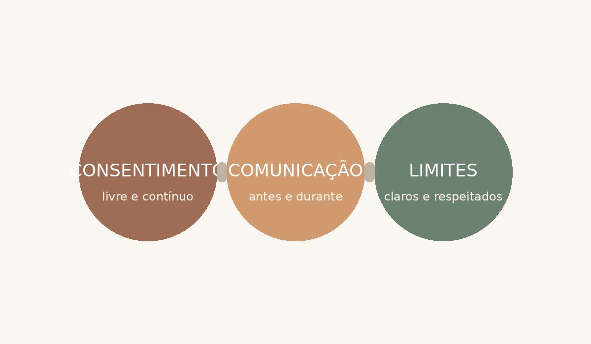

A expressão “massoterapia tântrica” é usada atualmente para descrever diferentes abordagens de toque consciente inspiradas, em graus variados, por ideias contemporâneas associadas ao Tantra. Não existe um único protocolo universal: escolas, profissionais e contextos podem usar métodos e vocabulários diferentes. Mais do que executar movimentos, muitas abordagens enfatizam atenção ao momento, respiração, percepção corporal, comunicação e limites.
Na divulgação profissional, evite promessas médicas ou terapêuticas que não estejam dentro da formação e do escopo do profissional. Expressões como “relaxamento”, “percepção corporal” e “experiência de presença” são mais cuidadosas do que alegações de cura.
1. Consentimento informado — antes do atendimento, alinhar o que será feito, quais áreas podem ser tocadas, preferências e limites.
2. Comunicação contínua — a conversa não termina no início da sessão. Perguntas simples podem confirmar conforto e mudanças desejadas.
3. Limites profissionais — limites físicos, emocionais e profissionais protegem cliente e profissional e tornam o atendimento mais previsível.

| Momento | Prática recomendada |
|---|---|
| Antes | Explicar a proposta, combinar limites, tirar dúvidas e verificar conforto. |
| Durante | Observar sinais verbais e não verbais e confirmar mudanças de pressão, ritmo ou área de toque. |
| Pausas | Usar silêncio e intervalos quando fizer sentido, sem preencher cada momento com estímulos. |
| Depois | Oferecer tempo para a pessoa se reorganizar, hidratar-se e comunicar como se sentiu. |

| Afirmação | Como tratar o tema |
|---|---|
| “Tantra é apenas sexo.” | Tantra é um termo amplo ligado a tradições e interpretações diversas. No uso contemporâneo, trabalho corporal inspirado no Tantra pode ter propostas diferentes e precisa ser explicado com clareza. |
| “Se começou, precisa ir até o fim.” | Não. Consentimento pode ser retirado a qualquer momento. Uma mudança de limite deve ser respeitada imediatamente. |
| “Todo benefício divulgado é comprovado.” | Não. Consentimento pode ser retirado a qualquer momento. Uma mudança de limite deve ser respeitada imediatamente. |
| “Todo benefício divulgado é comprovado.” | Não. Diferencie experiência subjetiva, bem-estar e relaxamento de alegações clínicas ou médicas. |
| “Limite quebra a conexão.” | Na prática profissional, limites claros tendem a aumentar previsibilidade, segurança e confiança. |